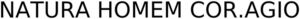

Trade Mark Journal No.2025/029 18 July 2025
WO0000001862407 (3)
Office of origin: Brazil
Date of International Registration:10 March 2025
Date of designation in the UK:
10 March 2025

- Class 3
- Abrasives; nail art stickers; astringents for cosmetic purposes; scented water; eau de cologne; lavender water; hydrogen peroxide for cosmetic purposes; cotton wool for cosmetic purposes; musk [perfumery]; amber [perfume]; mouth rinses, not for medical purposes; antiperspirants [toiletries]; aromatics [essential oils]; balms, other than for medical purposes; lipsticks; lip glosses; moustache wax; depilatory wax; false eyelashes; colorants for toilet purposes; hair conditioners; cosmetics; eyebrow cosmetics; cosmetic preparations for eyelashes; cosmetic creams; skin whitening creams; decorative transfers for cosmetic purposes; deodorants for personal use; nail varnish; mint essence [essential oil]; ethereal essences; compacts containing make-up [cosmetic kits]; extracts of flowers [perfumes]; massage gels, other than for medical purposes; dental bleaching gels; petroleum jelly for cosmetic purposes; geraniol; greases for cosmetic purposes; cotton swabs for cosmetic purposes; henna [cosmetic dye]; incense; ionone [perfumery]; eyebrow pencils; cosmetic pencils; hair spray; almond milk for cosmetic purposes; cleansing milk for toilet purposes; tissues impregnated with cosmetic lotions; tissues impregnated with make-up removing preparations; lotions for cosmetic purposes; after-shave lotions; make-up; beauty masks; mint for perfumery; potpourris [fragrances]; almond oil; bergamot oil; gaultheria oil; jasmine oil; lavender oil; rose oil; essential oils; essential oils of cedarwood; essential oils of citron; essential oils of lemon; oils for perfumes and scents; oils for cosmetic purposes; shaving stones [astringents]; perfumes; make-up powder; pomades for cosmetic purposes; lipstick cases; cosmetic preparations for baths; cosmetic preparations for slimming purposes; aloe vera preparations for cosmetic purposes; douching preparations for personal sanitary or deodorant purposes [toiletries]; collagen preparations for cosmetic purposes; hair straightening preparations; bath preparations, not for medical purposes; preparations for cleaning dentures; hair waving preparations; air fragrancing preparations; sunscreen preparations; sun-tanning preparations [cosmetics]; antistatic preparations for household purposes; cosmetic preparations for skin care; cosmetic preparations for eyelashes; perfumery; depilatory preparations; colour-removing preparations; bleaching preparations [decolorants] for cosmetic purposes; neutralizers for permanent waving; smoothing preparations [starching]; shaving preparations; degreasers, other than for use in manufacturing processes; make-up preparations; nail care preparations; make-up removing preparations; antiperspirant soap; almond soap; deodorant soap; shaving soap; cakes of toilet soap; bath salts, not for medical purposes; bleaching salts; adhesives for affixing false hair; adhesives for affixing false eyelashes; adhesives for cosmetic purposes; talcum powder, for toilet use; abrasive cloth; terpenes [essential oils]; cosmetic dyes; beard dyes; hair dyes; teeth whitening strips; breath freshening strips; false nails; phytocosmetic preparations; cleansers for intimate personal hygiene purposes, non-medicated; herbal extracts for cosmetic purposes; nail varnish removers; eye-washes, not for medical purposes; soap; hair lotions; toiletry preparations; shampoos; glass cloth [abrasive cloth]; dry shampoos; antiperspirant deodorants; skin clearing clay masks; face powder box [cosmetic case]; nail glue; fluoride preparation for oral hygiene; hair conditioners; pet conditioner [non-medicated, non-veterinary grooming preparation]; degreasing cream for cleaning the hands; anti-ageing skincare preparations, namely, organic, inorganic and synthetic; bath crystals, not for medical purposes; bath herbs; cosmetic kits; children's play cosmetics kits containing real make-up; liquids, creams and powders for cleaning the teeth; sandpaper for cleaning purposes; fragrance for personal use; pre impregnated cleansing tissues, namely, for use on the body, face and feet; dentifrices in the form of chewing gum and solid toothpaste tablets; cosmetic creams and lotions for cellulite reduction; toiletry preparations containing propolis, namely, oils, ointments, serums, salves, balms, creams, lotions, gels, toners, cleaners, peels, and roll-on sticks; abrasive cloth; acetone not for industrial use (nail varnish remover); depilatory lotions; seaweed-based cosmetics; non-medicated cleansing preparations for the skin; non medicated skin moisturizers; makeup remover; degreasing preparations for household use; all-purpose cotton buds for personal use; bubble bath preparations for cosmetic purposes.
NATURA COSMÉTICOS S.A.